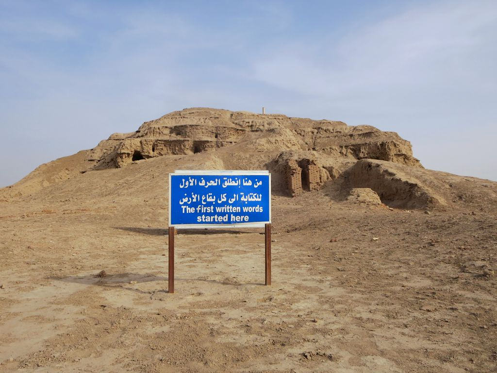

Uruk (Erech)

- Find Name
- Uruk (Erech)
- Description
- One of the oldest and largest cities of the ancient world, at modern Warka in southern Iraq, enclosed by a wall some six miles around. William Kennett Loftus explored and partly excavated it in 1850 and 1854, and German archaeologists from 1912 uncovered the Eanna temple precinct of the goddess Inanna (Ishtar) and the White Temple on its Anu ziggurat, one of the earliest monumental temples known. Uruk was, by around 3200 BC, the largest city on earth, the home of the Gilgamesh epic's hero-king, and one of the places where writing itself first appeared, in the form of proto-cuneiform tablets.
- Historical Period
- Sumerian to Seleucid, 4th millennium BC to c. AD 300
- Evidence Class
- Direct
- Interpretations
- Scholars agree Warka is biblical Erech (Sumerian Uruk); the consonants match, and the site's scale fits its place in Genesis 10. The Gilgamesh epic, whose flood story parallels Genesis, is set at Uruk, but the epic is a separate literary work, not evidence for any Genesis event, and is not claimed as such here.
- Alternative Names
- Erech; Warka; Orchoe
- Related Places
- Related Books
- Related People
- Scripture Illuminated
- Biblical Significance
- Erech is the second city named as the beginning of Nimrod's kingdom in Genesis 10:10, alongside Babel, Accad, and Calneh, in the land of Shinar. Uruk gives that verse a real place on the ground: a walled, templed, literate city in southern Mesopotamia, already ancient when the patriarchs' world began, and a reminder that the Bible's first city-builders were not legends but rulers of cities archaeology can still walk.
- Artifact Date
- White Temple and Anu ziggurat, c. 3200-3000 BC; city wall and Eanna precinct, 3rd millennium BC
- Current Location
- In situ, Iraq (finds chiefly in the Iraq Museum, Baghdad, and the Vorderasiatisches Museum, Berlin)
- Date Discovered
- 1850 and 1854 (William Kennett Loftus); German excavations from 1912
- Discovery Location
- Warka, southern Iraq, east of the Euphrates
- Timeline Era
- Primeval / Patriarchs
Awaiting Review Not yet checked against scholarly sources. Treat its claims as provisional until this entry is reviewed. About verification
Last reviewed: not yet reviewed